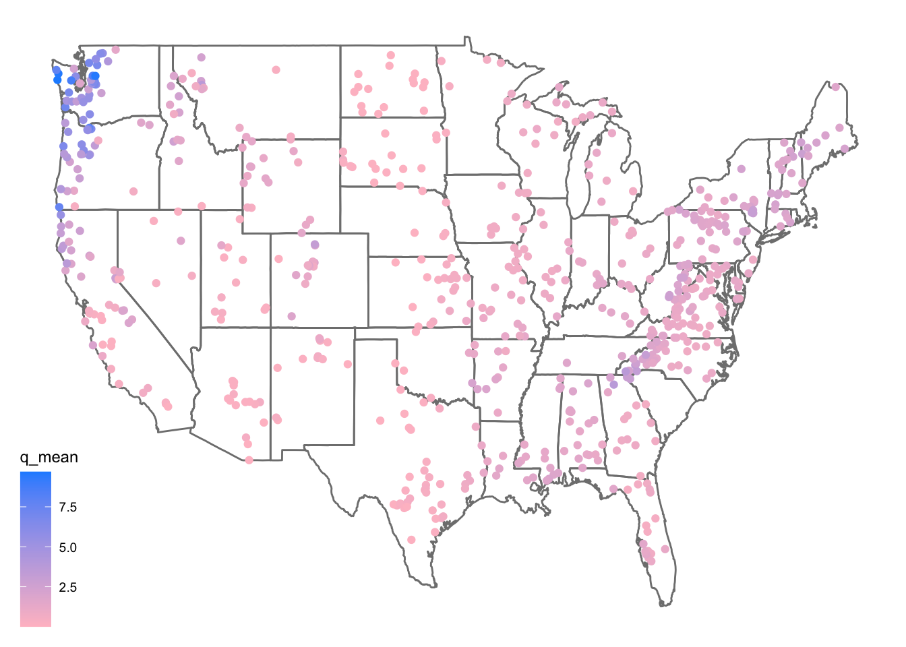
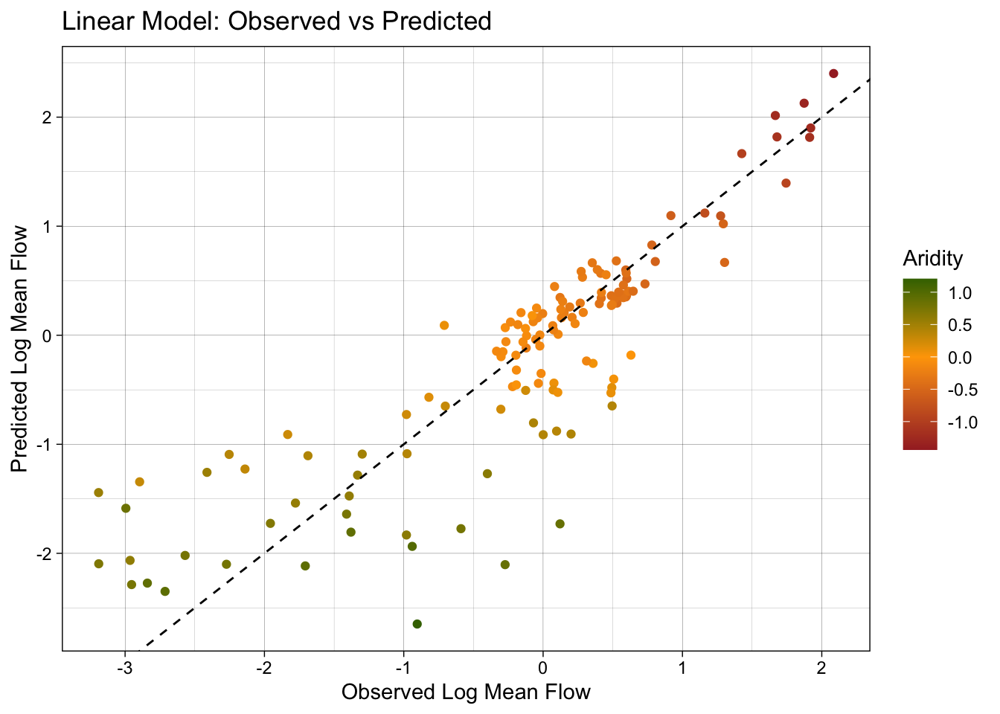
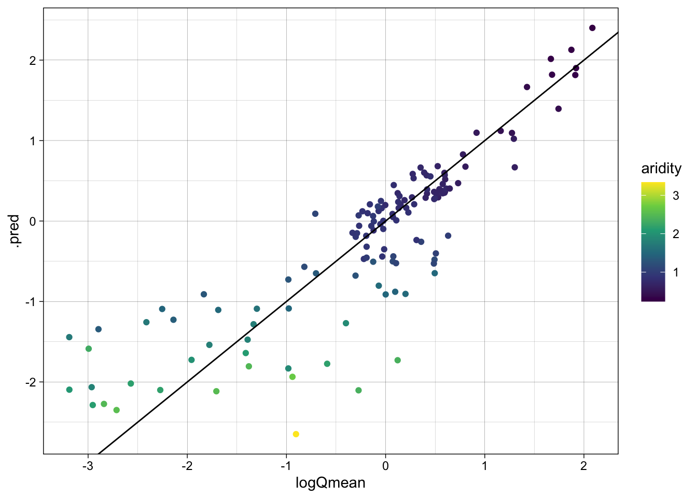
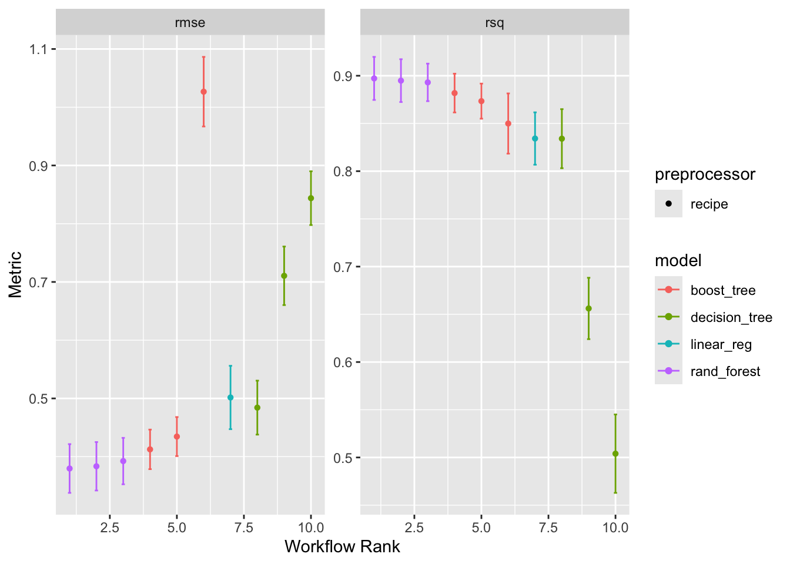

root <- 'https://gdex.ucar.edu/dataset/camels/file'Lab 6 ESS-330
Data Download
Here I downloaded and loaded in all the necessary packages.
Now I have to download the CAMELS dataset and documentation PDF
download.file(
"https://gdex.ucar.edu/dataset/camels/file/camels_attributes_v2.0.pdf",
destfile = here::here("data","camels_attributes_v2.0.pdf"),
mode = "wb"
)After downloading the data, I had to create remote and local file paths for six CAMELS attribute text files, then I downloaded each one into my data folder. Then I read all the downloaded files into R as tibbles and performs a full outer join on gauge_id to combine them into a single dataset.
types <- c("clim", "geol", "soil", "topo", "vege", "hydro")
remote_files <- glue('{root}/camels_{types}.txt')
local_files <- glue('data/camels_{types}.txt')
walk2(remote_files, local_files, download.file, quiet = TRUE)
camels <- map(local_files, read_delim, show_col_types = FALSE)
camels <- power_full_join(camels ,by = 'gauge_id')
camels <- camels %>%
filter(q_mean > 0) %>% # drop any zeros or negatives
mutate(logQmean = log(q_mean)) # now every logQmean is finite
# then re‐do your splitting…
camels_split <- initial_split(camels, prop = 0.75, strata = logQmean)
camels_train <- training(camels_split)
camels_test <- testing(camels_split)
camels_cv <- vfold_cv(camels_train, v = 10, strata = logQmean)Question 1
Question 1: zero_q_freq represents the frequency of days with Q = 0 mm/day.
Here is the map that was provided to us in the lab instructions.
library(ggthemes)
ggplot(data = camels, aes(x = gauge_lon, y = gauge_lat)) +
borders("state", colour = "gray50") +
geom_point(aes(color = q_mean)) +
scale_color_gradient(low = "pink", high = "dodgerblue") +
ggthemes::theme_map()
Question 2
Question #2: Here are my 2 maps
library(patchwork)
library(ggpubr)
# Map 1: colored by aridity
map_aridity <- ggplot(camels, aes(x = gauge_lon, y = gauge_lat)) +
borders("state", colour = "gray50") +
geom_point(aes(color = aridity), size = 1.5) +
scale_color_viridis_c(option = "magma", name = "Aridity\n(index)") +
labs(
title = "CAMELS Sites: Aridity",
x = "Longitude",
y = "Latitude"
) +
theme_map() +
theme(
plot.title = element_text(hjust = 0.5, size = 14, face = "bold")
)
# Map 2: colored by mean precipitation
map_pmean <- ggplot(camels, aes(x = gauge_lon, y = gauge_lat)) +
borders("state", colour = "gray50") +
geom_point(aes(color = p_mean), size = 1.5) +
scale_color_viridis_c(option = "plasma", name = expression(bar(P)~"(mm)")) +
labs(
title = "CAMELS Sites: Mean Precipitation",
x = "Longitude",
y = "Latitude"
) +
theme_map() +
theme(
plot.title = element_text(hjust = 0.5, size = 14, face = "bold")
)
ggarrange(
map_aridity + theme(legend.position = "bottom"),
map_pmean + theme(legend.position = "bottom"),
ncol = 2,
font.label = list(size = 14, face = "bold")
)Model Preparation
For the next part, I have to do some model preparation. The following code (up until Question #3) is provided for us in the lab, but I am copying it all down, along with the explanations, so I can follow along easier.
camels |>
select(aridity, p_mean, q_mean) |>
drop_na() |>
cor() aridity p_mean q_mean
aridity 1.0000000 -0.7550090 -0.5817771
p_mean -0.7550090 1.0000000 0.8865757
q_mean -0.5817771 0.8865757 1.0000000As expected, there is a strong correlation between rainfall and mean flow, and an inverse correlation between aridity and rainfall. While both are high, we are going see if we can build a model to predict mean flow using aridity and rainfall.
We’ll start by looking that the 3 dimensions (variables) of this data. We’ll start with a XY plot of aridity and rainfall.
# Create a scatter plot of aridity vs rainfall
ggplot(camels, aes(x = aridity, y = p_mean)) +
# Add points colored by mean flow
geom_point(aes(color = q_mean)) +
# Add a linear regression line
geom_smooth(method = "lm", color = "red", linetype = 2) +
# Apply the viridis color scale
scale_color_viridis_c() +
# Add a title, axis labels, and theme (w/ legend on the bottom)
theme_linedraw() +
theme(legend.position = "bottom") +
labs(title = "Aridity vs Rainfall vs Runnoff",
x = "Aridity",
y = "Rainfall",
color = "Mean Flow")`geom_smooth()` using formula = 'y ~ x'So it looks like there is a relationship between rainfall, aridity, and rainfall but it looks like an exponential decay function and is certainly not linear.
To test a transformation, we can log transform the x and y axes using the scale_x_log10() and scale_y_log10() functions.
ggplot(camels, aes(x = aridity, y = p_mean)) +
geom_point(aes(color = q_mean)) +
geom_smooth(method = "lm") +
scale_color_viridis_c() +
# Apply log transformations to the x and y axes
scale_x_log10() +
scale_y_log10() +
theme_linedraw() +
theme(legend.position = "bottom") +
labs(title = "Aridity vs Rainfall vs Runnoff",
x = "Aridity",
y = "Rainfall",
color = "Mean Flow")`geom_smooth()` using formula = 'y ~ x'We can see a log-log relationship between aridity and rainfall provides a more linear relationship. This is a common relationship in hydrology and is often used to estimate rainfall in ungauged basins. However, once the data is transformed, the lack of spread in the streamflow data is quite evident with high mean flow values being compressed to the low end of aridity/high end of rainfall.
To address this, we can visualize how a log transform may benifit the q_mean data as well. Since the data is represented by color, rather then an axis, we can use the trans (transform) argument in the scale_color_viridis_c() function to log transform the color scale.
ggplot(camels, aes(x = aridity, y = p_mean)) +
geom_point(aes(color = q_mean)) +
geom_smooth(method = "lm") +
# Apply a log transformation to the color scale
scale_color_viridis_c(trans = "log") +
scale_x_log10() +
scale_y_log10() +
theme_linedraw() +
theme(legend.position = "bottom",
# Expand the legend width ...
legend.key.width = unit(2.5, "cm"),
legend.key.height = unit(.5, "cm")) +
labs(title = "Aridity vs Rainfall vs Runnoff",
x = "Aridity",
y = "Rainfall",
color = "Mean Flow") `geom_smooth()` using formula = 'y ~ x'
Treating these three right skewed variables as log transformed, we can see a more evenly spread relationship between aridity, rainfall, and mean flow. This is a good sign for building a model to predict mean flow using aridity and rainfall.
Model Building
First, we set a seed for reproducabilty, then transform the q_mean column to a log scale. It is error prone to apply transformations to the outcome variable within a recipe. So, we’ll do it a prioi.
Once set, we can split the data into a training and testing set. We are going to use 80% of the data for training and 20% for testing with no stratification.
Additionally, we are going to create a 10-fold cross validation dataset to help us evaluate multi-model setups.
set.seed(123)
# Bad form to perform simple transformations on the outcome variable within a
# recipe. So, we'll do it here.
camels <- camels |>
mutate(logQmean = log(q_mean))
# Generate the split
camels_split <- initial_split(camels, prop = 0.8)
camels_train <- training(camels_split)
camels_test <- testing(camels_split)
camels_cv <- vfold_cv(camels_train, v = 10)Here, we are going to use the recipe function to define a series of data preprocessing steps.
We learned quite a lot about the data in the visual EDA. We know that the q_mean, aridity and p_mean columns are right skewed and can be helped by log transformations. We also know that the relationship between aridity and p_mean is non-linear and can be helped by adding an interaction term to the model. To implement these, lets build a recipe.
# Create a recipe to preprocess the data
rec <- recipe(logQmean ~ aridity + p_mean, data = camels_train) %>%
# Log transform the predictor variables (aridity and p_mean)
step_log(all_predictors()) %>%
# Add an interaction term between aridity and p_mean
step_interact(terms = ~ aridity:p_mean) %>%
# Drop any rows with missing values in the pred
step_naomit(all_predictors(), all_outcomes(), skip = TRUE)First, we use prep and bake on the training data to apply the recipe. Then, we fit a linear model to the data.
# Prepare the data
baked_data <- prep(rec, camels_train) |>
bake(new_data = NULL)
# Interaction with lm
# Base lm sets interaction terms with the * symbol
lm_base <- lm(logQmean ~ aridity * p_mean, data = baked_data)
summary(lm_base)
Call:
lm(formula = logQmean ~ aridity * p_mean, data = baked_data)
Residuals:
Min 1Q Median 3Q Max
-2.9149 -0.2136 -0.0142 0.1977 2.8855
Coefficients:
Estimate Std. Error t value Pr(>|t|)
(Intercept) -1.69673 0.16373 -10.363 < 2e-16 ***
aridity -0.96151 0.16213 -5.930 5.44e-09 ***
p_mean 1.41295 0.15480 9.128 < 2e-16 ***
aridity:p_mean 0.12004 0.07232 1.660 0.0975 .
---
Signif. codes: 0 '***' 0.001 '**' 0.01 '*' 0.05 '.' 0.1 ' ' 1
Residual standard error: 0.5719 on 532 degrees of freedom
Multiple R-squared: 0.7685, Adjusted R-squared: 0.7672
F-statistic: 588.8 on 3 and 532 DF, p-value: < 2.2e-16# Sanity Interaction term from recipe ... these should be equal!!
summary(lm(logQmean ~ aridity + p_mean + aridity_x_p_mean, data = baked_data))
Call:
lm(formula = logQmean ~ aridity + p_mean + aridity_x_p_mean,
data = baked_data)
Residuals:
Min 1Q Median 3Q Max
-2.9149 -0.2136 -0.0142 0.1977 2.8855
Coefficients:
Estimate Std. Error t value Pr(>|t|)
(Intercept) -1.69673 0.16373 -10.363 < 2e-16 ***
aridity -0.96151 0.16213 -5.930 5.44e-09 ***
p_mean 1.41295 0.15480 9.128 < 2e-16 ***
aridity_x_p_mean 0.12004 0.07232 1.660 0.0975 .
---
Signif. codes: 0 '***' 0.001 '**' 0.01 '*' 0.05 '.' 0.1 ' ' 1
Residual standard error: 0.5719 on 532 degrees of freedom
Multiple R-squared: 0.7685, Adjusted R-squared: 0.7672
F-statistic: 588.8 on 3 and 532 DF, p-value: < 2.2e-16To correctly evaluate the model on the test data, we need to apply the same preprocessing steps to the test data that we applied to the training data. We can do this using the prep and bake functions with the recipe object. This ensures the test data is transformed in the same way as the training data before making predictions.
test_data <- bake(prep(rec), new_data = camels_test)
test_data$lm_pred <- predict(lm_base, newdata = test_data)Now that we have the predicted values, we can evaluate the model using the metrics function from the yardstick package. This function calculates common regression metrics such as RMSE, R-squared, and MAE between the observed and predicted values.
metrics(test_data, truth = logQmean, estimate = lm_pred)# A tibble: 3 × 3
.metric .estimator .estimate
<chr> <chr> <dbl>
1 rmse standard 0.575
2 rsq standard 0.744
3 mae standard 0.397ggplot(test_data, aes(x = logQmean, y = lm_pred, colour = aridity)) +
# Apply a gradient color scale
scale_color_gradient2(low = "brown", mid = "orange", high = "darkgreen") +
geom_point() +
geom_abline(linetype = 2) +
theme_linedraw() +
labs(title = "Linear Model: Observed vs Predicted",
x = "Observed Log Mean Flow",
y = "Predicted Log Mean Flow",
color = "Aridity")
Workflows are built from a model, a preprocessor, and a execution. Here, we are going to use the linear_reg function to define a linear regression model, set the engine to lm, and the mode to regression. We then add our recipe to the workflow, fit the model to the training data, and extract the model coefficients.
# Define model
lm_model <- linear_reg() %>%
# define the engine
set_engine("lm") %>%
# define the mode
set_mode("regression")
# Instantiate a workflow ...
lm_wf <- workflow() %>%
# Add the recipe
add_recipe(rec) %>%
# Add the model
add_model(lm_model) %>%
# Fit the model to the training data
fit(data = camels_train)
# Extract the model coefficients from the workflow
summary(extract_fit_engine(lm_wf))$coefficients Estimate Std. Error t value Pr(>|t|)
(Intercept) -1.6967322 0.16372998 -10.362990 4.794423e-23
aridity -0.9615104 0.16212978 -5.930498 5.440196e-09
p_mean 1.4129541 0.15480012 9.127603 1.448210e-18
aridity_x_p_mean 0.1200410 0.07232329 1.659783 9.754732e-02# From the base implementation
summary(lm_base)$coefficients Estimate Std. Error t value Pr(>|t|)
(Intercept) -1.6967322 0.16372998 -10.362990 4.794423e-23
aridity -0.9615104 0.16212978 -5.930498 5.440196e-09
p_mean 1.4129541 0.15480012 9.127603 1.448210e-18
aridity:p_mean 0.1200410 0.07232329 1.659783 9.754732e-02Now that lm_wf is a workflow, data is not embedded in the model, we can use augment with the new_data argument to make predictions on the test data.
#
lm_data <- augment(lm_wf, new_data = camels_test)
dim(lm_data)[1] 134 61As with EDA, applying for graphical and statistical evaluation of the model is a key Here, we use the metrics function to extract the default metrics (rmse, rsq, mae) between the observed and predicted mean streamflow values.
We then create a scatter plot of the observed vs predicted values, colored by aridity, to visualize the model performance.
metrics(lm_data, truth = logQmean, estimate = .pred)# A tibble: 3 × 3
.metric .estimator .estimate
<chr> <chr> <dbl>
1 rmse standard 0.575
2 rsq standard 0.744
3 mae standard 0.397ggplot(lm_data, aes(x = logQmean, y = .pred, colour = aridity)) +
scale_color_viridis_c() +
geom_point() +
geom_abline() +
theme_linedraw()
Here, we are going to instead use a random forest model to predict mean streamflow. We define a random forest model using the rand_forest function, set the engine to ranger, and the mode to regression. We then add the recipe, fit the model, and evaluate the skill.
library(baguette)
rf_model <- rand_forest() %>%
set_engine("ranger", importance = "impurity") %>%
set_mode("regression")
rf_wf <- workflow() %>%
# Add the recipe
add_recipe(rec) %>%
# Add the model
add_model(rf_model) %>%
# Fit the model
fit(data = camels_train) Make predictions on the test data using the augment function and the new_data argument.
rf_data <- augment(rf_wf, new_data = camels_test)
dim(rf_data)[1] 134 60Evaluate the model using the metrics function and create a scatter plot of the observed vs predicted values, colored by aridity.
metrics(rf_data, truth = logQmean, estimate = .pred)# A tibble: 3 × 3
.metric .estimator .estimate
<chr> <chr> <dbl>
1 rmse standard 0.549
2 rsq standard 0.767
3 mae standard 0.354ggplot(rf_data, aes(x = logQmean, y = .pred, colour = aridity)) +
scale_color_viridis_c() +
geom_point() +
geom_abline() +
theme_linedraw()workflow_set is a powerful tool for comparing multiple models on the same data. It allows you to define a set of workflows, fit them to the same data, and evaluate their performance using a common metric. Here, we are going to create a workflow_set object with the linear regression and random forest models, fit them to the training data, and compare their performance using the autoplot and rank_results functions.
wf <- workflow_set(list(rec), list(lm_model, rf_model)) %>%
workflow_map('fit_resamples', resamples = camels_cv)
autoplot(wf)rank_results(wf, rank_metric = "rsq", select_best = TRUE)# A tibble: 4 × 9
wflow_id .config .metric mean std_err n preprocessor model rank
<chr> <chr> <chr> <dbl> <dbl> <int> <chr> <chr> <int>
1 recipe_rand_fore… Prepro… rmse 0.560 0.0369 10 recipe rand… 1
2 recipe_rand_fore… Prepro… rsq 0.776 0.0264 10 recipe rand… 1
3 recipe_linear_reg Prepro… rmse 0.570 0.0296 10 recipe line… 2
4 recipe_linear_reg Prepro… rsq 0.772 0.0218 10 recipe line… 2Question 3
#Define the new model
xgb_spec <- boost_tree(
trees = 1000,
tree_depth = tune(),
learn_rate = tune(),
loss_reduction = tune()
) %>%
set_engine("xgboost") %>%
set_mode("regression")
#Bagged MLP via baguette
nn_spec <- bag_mlp(
mode = "regression"
) %>%
set_engine("nnet")
#Re‐create the workflow set with all four models
models_list <- list(
linear = lm_model,
rf = rf_model,
xgb = xgb_spec,
mlp = nn_spec
)
wf_all <- workflow_set(
preproc = list(rec = rec),
models = models_list
)
#Fit all workflows via resampling
set.seed(123)
wf_res <- wf_all %>%
workflow_map(
fn = "tune_grid",
grid = 5,
resamples = camels_cv,
metrics = metric_set(rsq, rmse),
control = control_grid(save_pred = TRUE)
)
autoplot(wf_res)
rank_results(wf_res, rank_metric = "rsq", select_best = FALSE)# A tibble: 16 × 9
wflow_id .config .metric mean std_err n preprocessor model rank
<chr> <chr> <chr> <dbl> <dbl> <int> <chr> <chr> <int>
1 rec_xgb Preprocessor… rmse 0.534 0.0417 10 recipe boos… 1
2 rec_xgb Preprocessor… rsq 0.793 0.0284 10 recipe boos… 1
3 rec_xgb Preprocessor… rmse 0.644 0.0353 10 recipe boos… 2
4 rec_xgb Preprocessor… rsq 0.781 0.0224 10 recipe boos… 2
5 rec_rf Preprocessor… rmse 0.557 0.0372 10 recipe rand… 3
6 rec_rf Preprocessor… rsq 0.777 0.0267 10 recipe rand… 3
7 rec_linear Preprocessor… rmse 0.570 0.0296 10 recipe line… 4
8 rec_linear Preprocessor… rsq 0.772 0.0218 10 recipe line… 4
9 rec_mlp Preprocessor… rmse 0.579 0.0399 10 recipe bag_… 5
10 rec_mlp Preprocessor… rsq 0.760 0.0297 10 recipe bag_… 5
11 rec_xgb Preprocessor… rmse 0.729 0.0446 10 recipe boos… 6
12 rec_xgb Preprocessor… rsq 0.752 0.0355 10 recipe boos… 6
13 rec_xgb Preprocessor… rmse 0.610 0.0423 10 recipe boos… 7
14 rec_xgb Preprocessor… rsq 0.734 0.0373 10 recipe boos… 7
15 rec_xgb Preprocessor… rmse 0.664 0.0412 10 recipe boos… 8
16 rec_xgb Preprocessor… rsq 0.699 0.0373 10 recipe boos… 8Looking at the results, it is clear that I should move foward witht he “boost_tree” model, as it has the highest R^2 value, and the lowest RMSE.
# 0. load what you need
set.seed(123) # for reproducibility
# 1. make your target
camels <- camels %>%
mutate(logQmean = log(q_mean)) # log‐transform your outcome up front
# 2. initial split 75% train / 25% test
camels_split <- initial_split(camels, prop = 0.75, strata = logQmean)
camels_train <- training(camels_split)
camels_test <- testing(camels_split)
# 3. 10‐fold CV on the training set
camels_cv <- vfold_cv(camels_train, v = 10, strata = logQmean)# A. recipe: add/remove predictors and preprocessing as you like
rec_xgb <- recipe(logQmean ~
aridity +
p_mean +
soil_porosity +
geol_porostiy, # <-- correct spelling here
data = camels_train) %>%
step_log(all_numeric_predictors(), offset = 1) %>%
step_interact(terms = ~ aridity:p_mean) %>%
step_normalize(all_numeric_predictors())
# center & scale
# B. XGBoost spec with tuneable hyper‐parameters
xgb_spec <- boost_tree(
trees = 2000,
tree_depth = tune(),
learn_rate = tune(),
loss_reduction = tune(),
sample_size = tune()
) %>%
set_engine("xgboost") %>%
set_mode("regression")
# C. put it all in a workflow
xgb_wf <- workflow() %>%
add_recipe(rec_xgb) %>%
add_model(xgb_spec)
# D. create a reasonable hyper‐parameter grid
xgb_params <- parameters(xgb_spec)Warning: `parameters.model_spec()` was deprecated in tune 0.1.6.9003.
ℹ Please use `hardhat::extract_parameter_set_dials()` instead.xgb_grid <- grid_space_filling(parameters(xgb_spec), size = 20)
xgb_tune <- tune_grid(
xgb_wf,
resamples = camels_cv,
grid = xgb_grid,
metrics = metric_set(rsq, rmse),
control = control_grid(save_pred = TRUE)
)
autoplot(xgb_tune)collect_metrics(xgb_tune)# A tibble: 40 × 10
tree_depth learn_rate loss_reduction sample_size .metric .estimator mean
<int> <dbl> <dbl> <dbl> <chr> <chr> <dbl>
1 1 0.00616 0.0298 0.432 rmse standard 0.504
2 1 0.00616 0.0298 0.432 rsq standard 0.823
3 1 0.173 0.0000280 0.621 rmse standard 0.556
4 1 0.173 0.0000280 0.621 rsq standard 0.786
5 2 0.00455 0.00000695 0.905 rmse standard 0.479
6 2 0.00455 0.00000695 0.905 rsq standard 0.838
7 2 0.0153 0.0000000001 0.526 rmse standard 0.503
8 2 0.0153 0.0000000001 0.526 rsq standard 0.823
9 3 0.0280 0.00000173 0.1 rmse standard 0.525
10 3 0.0280 0.00000173 0.1 rsq standard 0.809
# ℹ 30 more rows
# ℹ 3 more variables: n <int>, std_err <dbl>, .config <chr># G. pull out the best for R², finalize & test
# G. pull out the best for R²
best_params <- select_best(xgb_tune, metric = "rsq")
# finalize & test
final_wf <- finalize_workflow(xgb_wf, best_params)
final_fit <- last_fit(final_wf, camels_split)
collect_metrics(final_fit)# A tibble: 2 × 4
.metric .estimator .estimate .config
<chr> <chr> <dbl> <chr>
1 rmse standard 0.443 Preprocessor1_Model1
2 rsq standard 0.867 Preprocessor1_Model1logQmean ~
p_mean + # mean annual precipitation – main driver of streamflow
pet_mean + # potential evapotranspiration – controls loss
aridity + # long‐term dryness metric (p_mean / pet_mean)
frac_snow + # fraction of precipitation as snow – seasonality
soil_porosity + # controls infiltration & baseflow
geol_porostiy # geology‐inferred porosity (rocks) logQmean ~ p_mean + pet_mean + aridity + frac_snow + soil_porosity +
geol_porostiyI chose these 6 predictors because p_mean and pet_mean come straight from the PDF description and together they explain the water input vs. evaporative loss.
Aridity is simply p_mean / pet_mean; it captures the overall climate “dryness.”
frac_snow tells us how much of that precipitation falls as snow which is important for timing/magnitude of summer flows.
soil_porosity and geol_porostiy control how much water the basin can store and slowly release, smoothing peaks and boosting baseflow.
Empirically in hydrology these six together usually explain the lion’s share of cross‐site Qmean variability, so they’re a logical starting point.
rec_final <- recipe(
logQmean ~
p_mean + pet_mean + aridity + frac_snow +
soil_porosity + geol_porostiy,
data = camels_train
) %>%
# a) log‐transform the three most skewed inputs
step_log(all_of(c("p_mean", "pet_mean", "frac_snow")), offset = 1) %>%
# b) add a simple interaction between precipitation & aridity
step_interact(terms = ~ p_mean:aridity) %>%
# c) center & scale everything so XGBoost doesn't have to handle wildly different ranges
step_normalize(all_numeric_predictors()) %>%
# d) drop any zero‐variance columns (just in case)
step_zv(all_predictors())final_wf <- workflow() %>%
add_recipe(rec_final) %>%
add_model(xgb_spec) %>%
finalize_workflow(best_params)Warning: Using `all_of()` outside of a selecting function was deprecated in tidyselect
1.2.0.
ℹ See details at
<https://tidyselect.r-lib.org/reference/faq-selection-context.html>final_fit <- last_fit(final_wf, camels_split)
collect_metrics(final_fit)# A tibble: 2 × 4
.metric .estimator .estimate .config
<chr> <chr> <dbl> <chr>
1 rmse standard 0.396 Preprocessor1_Model1
2 rsq standard 0.895 Preprocessor1_Model1